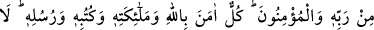
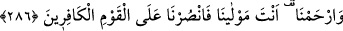

İMAN ESASLARI VE DUÂ
284. Göklerde ve yerdekilerin hepsi Allah’ındır. İçinizdekileri açığa vursanız da
gizleseniz de Allah ondan dolayı sizi hesaba çekecektir, sonra dilediğini affeder,
dilediğine de azap eder. Allah her şeye kadirdir.
285. Peygamber, Rabbi tarafından kendisine indirilene iman etti, mü’minler de
(iman ettiler). Her biri Allah’a meleklerine, kitaplarına, peygamberlerine iman
ettiler. “Allah’ın peygamberlerinden hiçbiri arasında ayırım yapmayız. İşittik, itaat
ettik. Ey Rabbimiz, affına sığındık! Dönüş sanadır” dediler.
286. Allah her şahsı, ancak gücünün yettiği ölçüde mükellef kılar. Herkesin
kazandığı (hayır) kendine, yapacağı (şer) de kendinedir. Rabbimiz! Unutursak veya
hataya düşersek bizi sorumlu tutma. Ey Rabbimiz! Bizden öncekilere yüklediğin
gibi bize de ağır bir yük yükleme. Ey Rabbimiz! Bize gücümüzün yetmediği işler
de yükleme! Bizi affet! Bizi bağışla! Bize acı! Sen bizim mevlâmızsın. Kâfirler
topluluğuna karşı bize yardım et!
Göklerin ve yerin içinde ve dışında bulunan her şey ve cereyan eden her hâdise
Allah’a âiddir. Bütün bunların yaratıcısı ve sâhibi O’dur. O mülkünde dilediği gibi
tasarrufta bulunabilir. Hiçbir kimsenin bunda bir ortaklığı yoktur. O halde O’ndan
başkasına kulluk etmeyiniz. Emirlerine uymakta ve nehiylerinden kaçınmakta Allah’a
asla isyan etmeyiniz.
Kötü niyetlerinizi, şahidliği gizlemek ve müşriklere dost olmak gibi kötü fiillerinizi